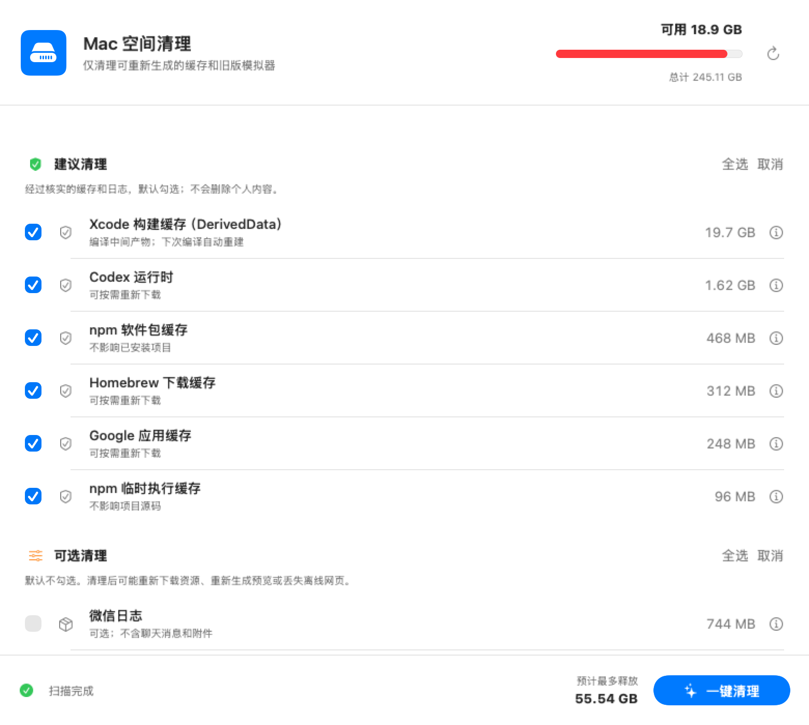

建议清理
浏览器组件缓存、更新缓存、日志，以及 npm、pnpm、bun、Homebrew、Playwright 等可重新生成的内容。
真实界面
建议清理、可选缓存、旧版模拟器和个人数据分区呈现，扫描完成后再由用户决定。

识别范围
浏览器组件缓存、更新缓存、日志，以及 npm、pnpm、bun、Homebrew、Playwright 等可重新生成的内容。
其他应用缓存、离线网页、语音模型、动态壁纸，以及微信、WPS 等应用的临时资源。
识别旧版运行时并保留每个平台的最新版本，也可清理按需重建的 dyld 共享缓存。
下载、iCloud、微信聊天数据和 WPS 备份仅展示空间占用，不会进入一键清理。
安全边界
删除前会再次检查白名单、目录类型与符号链接。没有匹配安全规则的路径不会执行清理。
当前版本 1.2
下载 DMG，将 App 拖入“应用程序”即可。文件大小约 1.2 MB。